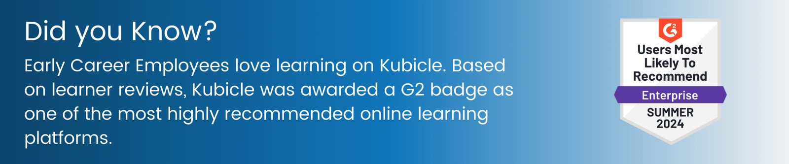
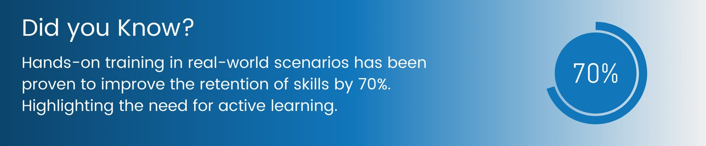
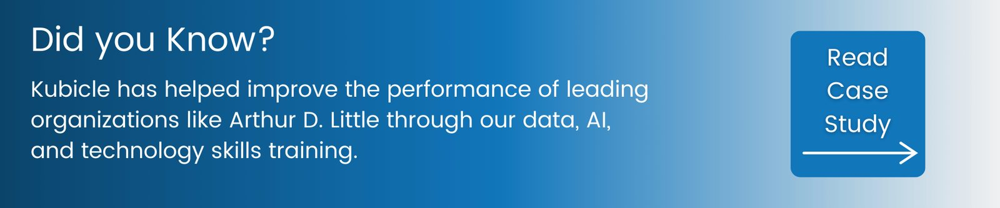
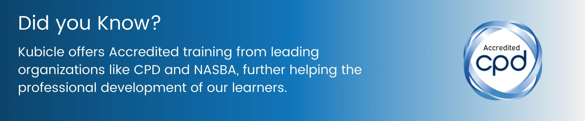
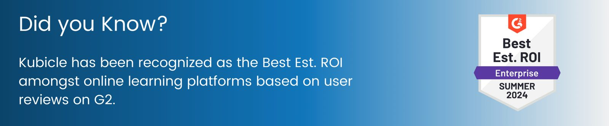
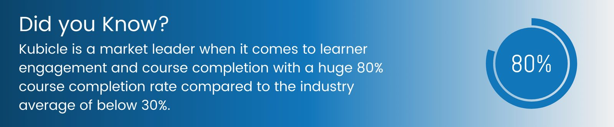

Early career training programs are critical for organizations aiming to build a robust talent pipeline and ensure the long-term success of their workforce. Like most things in business, to understand the effectiveness of these programs, it is essential to evaluate them using key metrics. These metrics not only help in assessing the immediate impact of the training but also in identifying areas for improvement and measuring the return on investment. Structured, measurable training in core business skills, such as data literacy and digital tools, is particularly essential to modern business success. So, what are the key questions you need to answer?
1. Are your Early Career Hires Satisfied?
Participant satisfaction directly indicates how well your training program meets the expectations and needs of your trainees. High satisfaction levels lead to better engagement and a more positive learning environment. According to a Gallup survey, organizations with highly engaged employees report a 21% higher profitability. Ensuring high satisfaction in training programs can significantly contribute to this engagement.
Best Practices to Measure Participant Satisfaction:
- Surveys and Feedback Forms: Collect anonymous feedback from participants at the end of each training session. Use tools like Google Forms, SurveyMonkey, or specialized HR software to gather comprehensive insights.
- Net Promoter Score (NPS): Ask participants how likely they are to recommend the training to others. An NPS survey can be a single-question assessment followed by optional qualitative feedback to gather more detailed insights.
- Interactive Sessions: Include interactive sessions within the training program to gather real-time feedback. Tools like live polls and Q&A segments can help assess satisfaction levels during the training itself.

2. Is Knowledge Being Retained and Applied?
The primary goal of any training program is to impart skills that participants can retain and apply in their job roles. Measuring new skills and their application ensures that the training is effective. The Association for Talent Development (ATD)’s research shows that companies with comprehensive training programs have 218% higher income per employee than those with less comprehensive training. This demonstrates the value of effective knowledge retention and application, particularly in data literacy and digital tools.
Best Practices to Measure Knowledge Retention and Application:
- Assessments and Quizzes: Conduct pre- and post-training assessments to measure knowledge gained. Leading online learning platforms like Kubicle offer skill checks to assess skill levels at any moment in time.
- Practical Evaluations: Include practical assignments or projects to assess the application of learned skills. Simulations, case studies, and real-world problem-solving exercises can provide valuable insights.
- Follow-Up Surveys: Check in with participants after a few months to evaluate long-term retention and application. This can be done through periodic surveys or performance reviews.

3. Is Performance Improving?
Improved performance is a tangible outcome of effective training. By tracking performance metrics, organizations can link training programs to business outcomes. According to a study by PwC, well-designed training programs can lead to a 16% increase in employee performance. This highlights the significant impact that targeted training, especially in core business skills like data literacy, can have on individual and organizational performance.
Best Practices to Measure Performance Improvement:
- Key Performance Indicators (KPIs): Monitor changes in relevant KPIs for the participants, such as productivity, sales figures, or customer satisfaction scores. Set specific, measurable, achievable, relevant, and time-bound (SMART) goals to track these changes effectively.
- Manager Evaluations: Collect feedback from managers on the performance improvements observed in their team members post-training. Regular check-ins and performance review meetings can be instrumental in this.
- Employee Self-Assessments: Encourage participants to conduct self-assessments to reflect on their own performance improvements and identify areas for further development.

4. Are Your Early Career Hires Progressing Their Career in Your Organization?
Effective training programs can increase employee retention by promoting job satisfaction and career growth. Monitoring retention and career progression helps in understanding the long-term impact of the training. Gartner’s research indicates that organizations with strong learning cultures have employee retention rates 30-50% higher than those that don’t. This underscores the importance of training in retaining top talent and facilitating career progression.
Best Practices to Measure Employee Retention and Career Progression:
- Retention Rates: Compare retention rates of trained employees versus untrained employees. Use HR analytics tools to track this data over time.
- Promotion Rates: Track the career progression of participants, including promotions and role changes. This can be done through HR software that monitors employee career paths and development milestones.
- Exit Interviews: Conduct exit interviews to understand if lack of training was a factor in the decision to leave. This qualitative data can provide insights into the training program’s effectiveness and areas for improvement.

5. Are you Getting a Return on Investment (ROI)?
Calculating the ROI of training programs helps in justifying the expenses and resources allocated. A positive ROI indicates that the benefits of the training outweigh the costs. A study by the American Society for Training and Development (ASTD) found that companies investing $1,500 per employee on training annually can see an average of 24% higher profit margins. This demonstrates a clear link between training investment and financial performance.
Best Practices to Measure ROI of Training:
- Cost-Benefit Analysis: Compare the total costs of the training (including materials, time, and resources) against the financial benefits derived from improved performance and reduced turnover. Use financial analysis tools to calculate this accurately.
- Productivity Gains: Estimate the financial impact of productivity improvements attributed to the training. Gather data on performance metrics pre- and post-training to determine the productivity gains.
- Reduced Turnover Costs: Calculate the savings from reduced employee turnover due to effective training programs. Include costs related to hiring, onboarding, and lost productivity.

6. Are Individuals Engaging and Completing Training Programs?
High engagement and participation rates indicate that the training program is well-received and valued by employees. These rates also reflect the accessibility and relevance of the training content. Gallup reports that highly engaged teams show 21% greater profitability. Ensuring high engagement in training programs, particularly those focusing on essential skills like data literacy and digital tools, is therefore crucial for overall business success.
Best Practices to Measure Engagement Rates:
- Engagement Metrics: Monitor active participation during training, such as questions asked, discussions initiated, and completion rates of training modules. Tools like engagement tracking software and interactive LMS features can provide detailed insights.
- Follow-Up Activities: Encourage follow-up activities like group discussions, projects, or continuous learning modules to keep participants engaged beyond the initial training.

Conclusion
Evaluating the success of early career training programs requires a multifaceted approach, incorporating both qualitative and quantitative metrics. Organizations can ensure their training programs are effective and continuously improving by systematically measuring participant satisfaction, knowledge retention, performance improvement, employee retention, ROI, and engagement rates. These metrics provide valuable insights that can help refine training strategies. Structured, measurable training in core business skills such as data literacy and digital tools is essential for modern business success, leading to a more skilled, motivated, and productive workforce.
Interested in quipping your early career hires with the data & AI literacy they need to thrive? Check out our tailored training solution here.